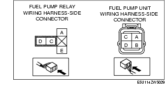

Workshop Manual ➭ ENGINE ➭ FUEL SYSTEM[L8, LF] ➭ FUEL PUMP UNIT INSPECTION [L8, LF]
FUEL PUMP UNIT INSPECTION [L8, LF]
id0114a3801100
{: #wp1059779}
Warning
• Fuel is very flammable liquid. If fuel spills or leaks from the pressurized fuel system, it will cause serious injury or death and facility breakage. Fuel can also irritate skin and eyes. To prevent this, always complete the "Fuel Line Safety Procedure", while referring to "BEFORE SERVICE PRECAUTION". {: #wp1062618}• Fuel is very flammable liquid. If fuel spills or leaks from the pressurized fuel system, it will cause serious injury or death and facility breakage. Fuel can also irritate skin and eyes. To prevent this, before performing the fuel pump unit removal/installation, always complete the "Fuel Leak Inspection After Fuel Pump Unit Installation". {: #wp1059805}• A person charged with static electricity could cause a fire or explosion, resulting in death or serious injury. Before draining fuel, make sure to discharge static electricity by touching the vehicle body.
Fuel Pump Operation Inspection
-
Follow "BEFORE SERVICE PRECAUTION" before performing any work operations to prevent fuel from spilling from the fuel system. (See BEFORE SERVICE PRECAUTION [L8, LF].)
-
Remove the fuel-filler cap.
-
Start the fuel pump using the following procedure:
Using M-MDS
- Connect the M-MDS to the DLC-2.

{: #wp1059895}2. Start the fuel pump using the "FP" simulation function.
Not using M-MDS
- Short the check connector terminal F/P to ground using a jumper wire.


-
Turn the ignition switch to the ON position to operate the fuel pump.
-
Verify that operation sound is heard from the fuel pump.
• If the operation sound cannot be verified, measure the voltage at fuel pump unit wiring harness-side connector terminal B.
- If as specified, inspect the following:
• Fuel pump unit continuity
- If not within the specification, inspect the following:
• Fuel pump unit relay {: #wp1060085}• Wiring harnesses and connectors between main relay and fuel pump relay {: #wp1060099}• Wiring harnesses and connectors between fuel pump relay and PCM {: #wp1060109}• Wiring harnesses and connectors between battery and fuel pump relay {: #wp1060119}• Wiring harnesses and connectors between fuel pump relay and fuel pump unit
StandardB+ (Ignition switch at ON)
Continuity Inspection
-
Remove the battery cover.
-
Disconnect the negative battery cable. (See BATTERY REMOVAL/INSTALLATION [L8, LF].)
-
Disconnect the fuel pump unit connector. (See FUEL PUMP UNIT REMOVAL/INSTALLATION [L8, LF].)
-
Inspect for continuity between fuel pump unit terminals B and D.{: #wp1060221}

• If there is continuity, perform the "Circuit Open/Short Inspection". {: #wp1060248}• If there is no continuity, replace the fuel pump. (See FUEL PUMP UNIT DISASSEMBLY/ASSEMBLY [L8, LF].)
Circuit Open/Short Inspection
- Inspect the following wiring harnesses for an open or short circuit (continuity check).{: #wp1060298}

Open circuit
• If there is no continuity, the circuit is open. Repair or replace the harness.
- Fuel pump unit terminal D and body ground
Fuel Static Pressure Inspection
*Note*{: #wp1060369}
• The fuel static pressure inspection cannot be performed because the pressure regulator is integrated with the fuel pump unit.